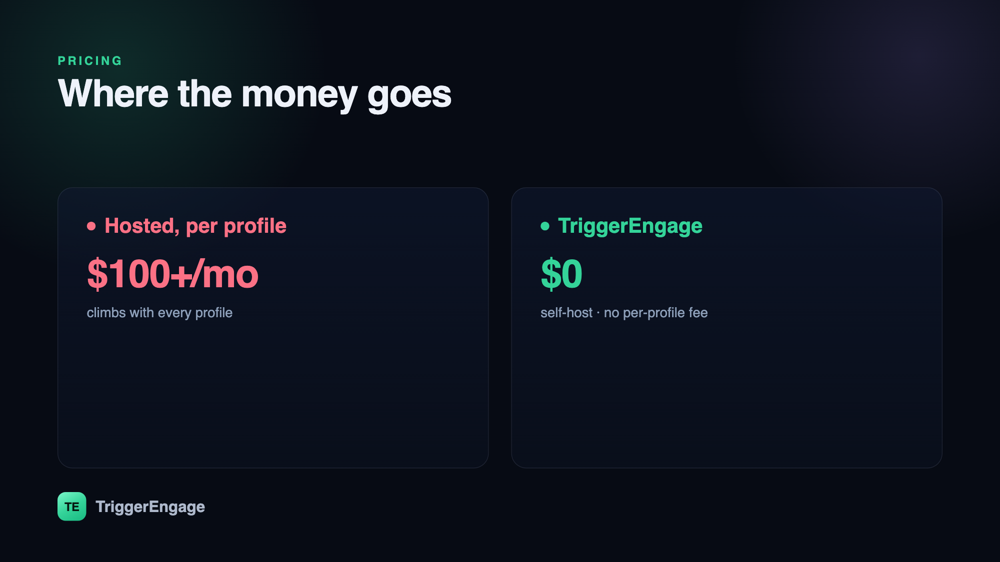

Customer.io is an excellent lifecycle-messaging tool, but its per-profile pricing — the entry plan starts around $100/month and climbs with every profile you store — sends plenty of teams looking for something that scales differently. If you are weighing Customer.io alternatives, the right pick depends less on feature checklists and more on how each tool bills you, which channels it sends on, and whether you can own the data. This guide compares six of them by the things that actually matter.

What to look for in a Customer.io alternative
Most comparison posts drown you in feature grids. In practice, the choice comes down to five questions. Answer these first and the shortlist writes itself.
- Pricing model. Per-profile (or per-contact) billing means your bill grows as your audience grows, whether or not those people ever open a message. Flat and free models decouple cost from list size. This is the single biggest reason people leave Customer.io.
- Channels. Do you need email only, or email plus SMS and push? Cross-channel tools cost more but save you from stitching several vendors together.
- Automation depth. Look for visual journeys, branching logic, time delays and wait steps, and built-in A/B testing. Shallow tools force your app code to do the orchestration.
- Data ownership and self-hosting. If you handle sensitive data or want to avoid vendor lock-in, a self-hosted or open source option keeps profiles on infrastructure you control.
- Developer experience. A clean SDK or API, sensible event model, and support for anonymous-to-identified tracking determine how quickly you can ship. If you are wiring up event-based emails in Laravel, this matters more than any dashboard.
The 6 best Customer.io alternatives in 2026
The tools below span the full range — from a free, self-hosted project to enterprise platforms with sales teams. Each fits a different kind of team, so read the "best for" line as much as the description.
TriggerEngage — the open-source, self-hosted option
TriggerEngage is an MIT-licensed, open source lifecycle-messaging platform built for Laravel teams. It is free and carries no per-profile fee — you either self-host it or embed it directly in your Laravel app with composer require trigger-engage/server. Because you run it on your own infrastructure, your profile data never leaves your control. For a feature-by-feature breakdown, see our TriggerEngage vs Customer.io comparison.
Feature-wise it covers the workflow you would expect from a hosted tool: visual journeys with branching and waits, behavioral segments, A/B testing, anonymous-to-identified tracking, and analytics. It sends on email (SMTP, Amazon SES, Mailgun, Postmark), SMS (Termii), and push (OneSignal).
Best for: Laravel teams who want to own their data and stop paying per profile as their user base grows.
Braze
Braze is an enterprise customer-engagement platform aimed at large consumer brands. Its strength is cross-channel orchestration at scale — email, push, in-app, and more from one place — with the deep analytics and services that big teams expect. Pricing is enterprise and sales-led, quoted per engagement rather than published. For a feature-by-feature look, see TriggerEngage vs Braze.
Best for: large consumer brands with the budget and headcount for an enterprise platform.
Iterable
Iterable is another enterprise cross-channel marketing-automation platform, positioned for growth and marketing teams operating at scale. Like Braze, it leans on cross-channel campaigns and experimentation, and its pricing is sales-led rather than self-serve.
Best for: growth and marketing teams at scale who want a full enterprise suite.
Klaviyo
Klaviyo is a marketing-automation tool with a deep e-commerce focus and tight Shopify integration. It is built around store data — orders, products, browsing — which makes it strong for abandoned-cart and post-purchase flows. Klaviyo uses per-contact pricing, so your cost rises with the size of your list. Compare them directly: TriggerEngage vs Klaviyo.
Best for: online stores, especially on Shopify, that want e-commerce flows out of the box.
Encharge
Encharge is a marketing-automation tool aimed at SaaS companies, with a visual flow builder for onboarding and lifecycle campaigns. It sits in the mid-market and uses contact-based pricing, making it a lighter, more affordable pick than the enterprise platforms.
Best for: mid-market SaaS teams that want a flow builder without an enterprise contract.
Mailchimp
Mailchimp is the broad, well-known email-marketing tool, with some automation layered on top. It is approachable and widely supported, with contact-based tiers that scale as your audience grows. It is less of an event-driven lifecycle engine and more of a newsletter-plus-basics platform. See TriggerEngage vs Mailchimp for the details.
Best for: simple newsletters and small businesses stepping up from the basics.
Comparison at a glance
| Tool | Pricing model | Channels | Self-host | Best for |
|---|---|---|---|---|
| TriggerEngage | Free, open source (no per-profile fee) | Email, SMS, push | Yes | Laravel teams owning their data |
| Braze | Enterprise, sales-led | Email, push, in-app, more | No | Large consumer brands |
| Iterable | Enterprise, sales-led | Email, SMS, push, more | No | Growth teams at scale |
| Klaviyo | Per-contact | Email, SMS | No | E-commerce / Shopify stores |
| Encharge | Contact-based | No | Mid-market SaaS | |
| Mailchimp | Contact-based tiers | No | Newsletters, small business |
How to choose
Match the decision to your constraint rather than the longest feature list:
- You need to own your data or avoid per-profile fees. Choose an open source, self-hosted tool. You keep profiles on your own infrastructure and decouple cost from list size.
- You are at enterprise scale and want managed services. Braze or Iterable give you cross-channel orchestration and a support team, at enterprise pricing.
- You run an online store. Klaviyo's e-commerce and Shopify depth is hard to beat for cart and post-purchase flows.
- You mostly send newsletters. Mailchimp keeps things simple and familiar for small teams.
- You have a Laravel app and want messaging embedded in it. TriggerEngage installs with Composer and runs inside your stack, so your behavioral segmentation and journeys live next to your application data.
Whichever way you lean, test with a real flow before committing. Pick one high-value journey — a welcome series or a re-engagement campaign — build it end to end, and see how the pricing, channels, and automation hold up against your actual event data. That single test tells you more than any comparison table, this one included.
Frequently asked questions
Is there a free Customer.io alternative?
Can I self-host a Customer.io alternative?
composer require trigger-engage/server, which keeps all profile data on infrastructure you control. The enterprise and SaaS options in this list — Braze, Iterable, Klaviyo, Encharge, and Mailchimp — are hosted-only.